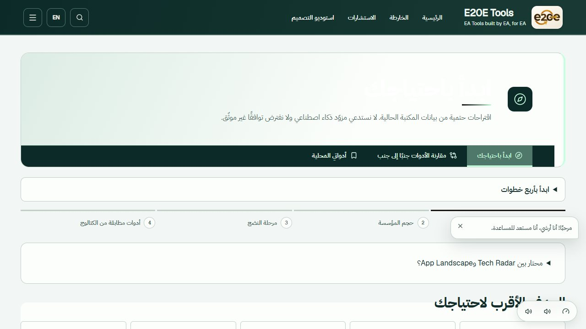
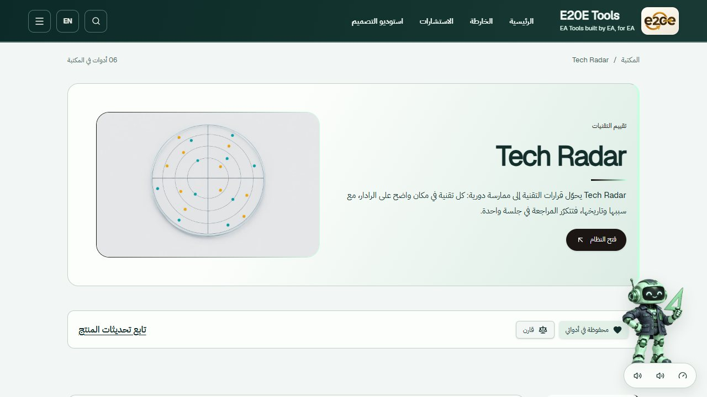
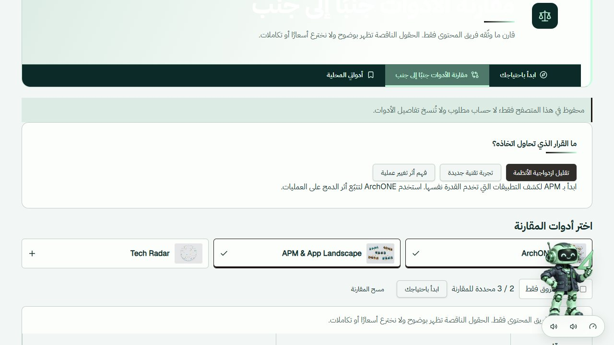
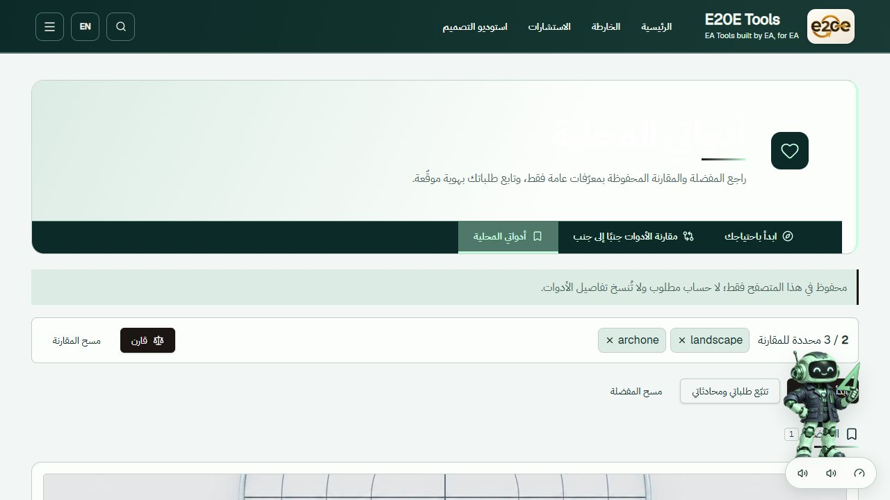
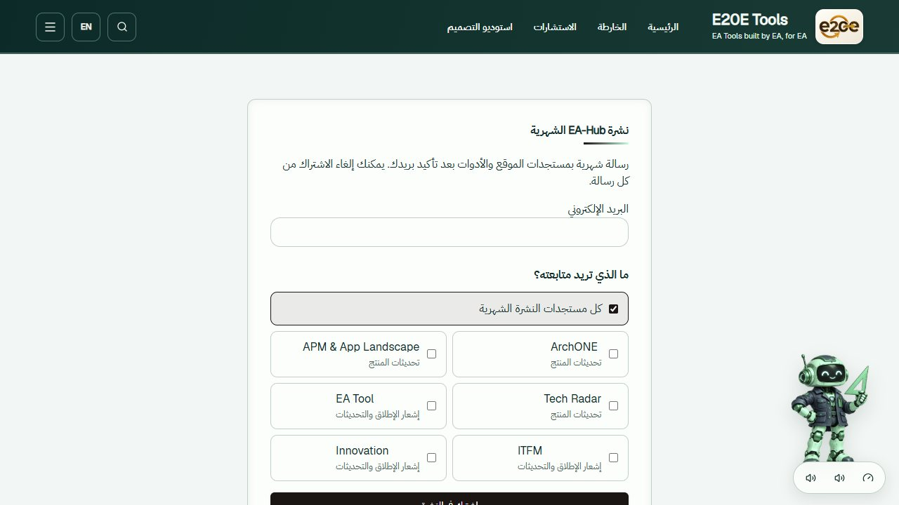

01 / 05ابدأ من احتياجكاختر هدفك في صفحة اكتشف الأدوات. راجع الترشيحات ثم افتح تفاصيل الأداة الأقرب إلى احتياجك.افتح هذه الصفحة
02 / 05افحص الأداة قبل فتحهااقرأ ما تقدمه الأداة ومتطلبات استخدامها. افتح الأداة الجاهزة، أو احفظها للعودة إليها من «أدواتي».افتح هذه الصفحة
03 / 05قارن الخيارات حسب القراراختر سيناريو أو حدّد الأدوات بنفسك. فعّل عرض الفروق فقط لتعرف أي أداة تخدم قرارك.افتح هذه الصفحة
04 / 05ارجع إلى الأدوات المحفوظةافتح «أدواتي» من مساحة العمل على الجهاز نفسه. اختر أداة محفوظة لاستكمال مراجعتها.افتح هذه الصفحة
05 / 05تابع تحديثات المنتجاتأدخل بريدك وحدّد النشرة العامة أو المنتجات التي تهمك، ثم اشترك وأكّد عنوانك من الرسالة.افتح هذه الصفحة